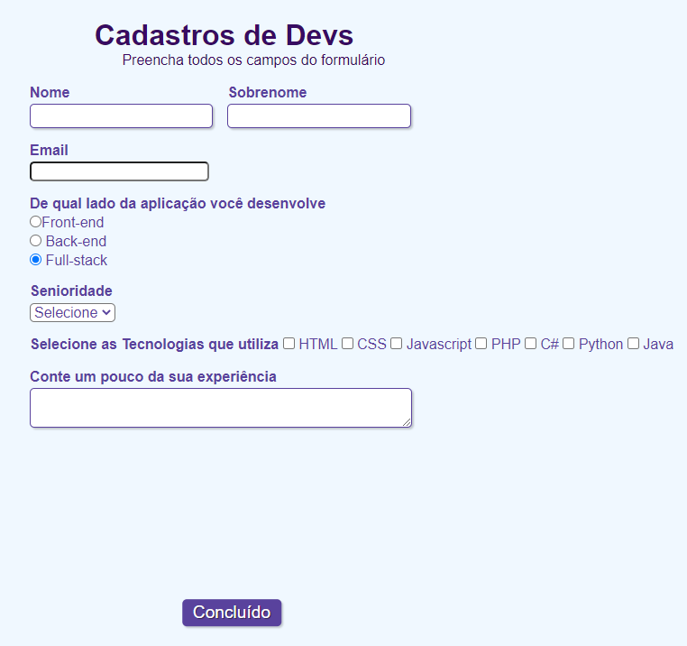

Eleve seu negócio digital a outro nível com um Front-end de qualidade!
Olá! Sou Will Mossini, tenho 30 anos e sou um profissional atuante nas areas administrativa/financeira no setor da administração pública. Tenho habilidades em planejamento e execução de processos, autodidata e tenho muita curiosidade por solucionar problemas. Atualmente estou estudando na UNICESUMAR no curso de Análise e Desenvolvimento de Sistemas, nesta jornada consegui adquirir conhecimentos baseados em internet das coisas, lógica de programação, algoritmo e outros.
Não limitei meus conhecimentos apenas ao ambiente acadêmico, também realizei cursos nas plataformas da Alura, Curso em Video e outras, aprendi a desenvolver páginas web com HTML e CSS. Após um ano de estudos tenho familiariadade com orientação a objeto, linguagens de programação C e Java, estou iniciando o aprofundamento em JavaScrip, veja um pouco dos projetos que desenvolvi. Fique a vontade para acessar minhas redes sociais e entrar em contato comigo!
PROJETO - Formulário de Cadastro
Minha primeira página de formulário com HTML e CSS, Link do Canal: (cópia do canal do You Tube da Rafaella Ballerini